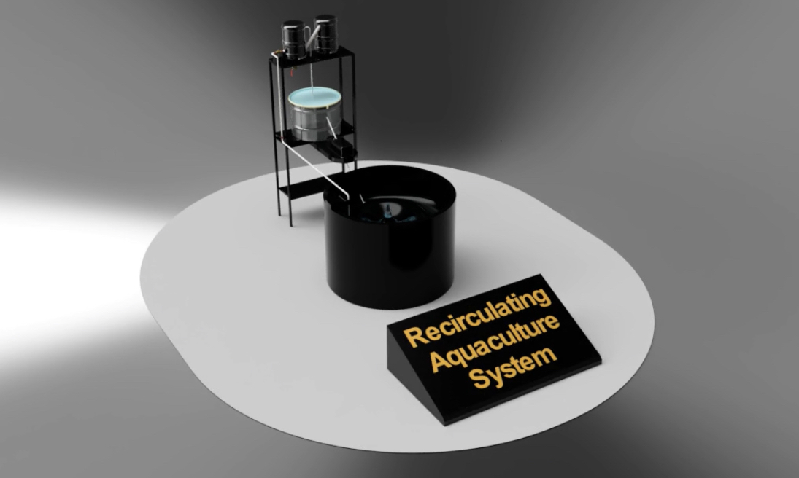

3 Stage Automatic Water Filtration System
What:
This project optimizes marine aquaculture operations with a 3-stage filtration system designed to enhance water quality and operational efficiency. The system integrates advanced engineering tools for design and simulation, focusing on improving filtration effectiveness and reducing operational costs.
How:
The filtration system includes:
- 3 Stage Design: Incorporates mechanical, biological, and chemical filtration stages to address diverse water contaminants.
- Engineering Tools: Utilizes advanced software for design and simulation to optimize filtration efficiency.
The development process involved:
- Design and Simulation: Iterative refinement of system components for maximum filtration performance.
- Prototyping: Testing of prototype designs to validate filtration effectiveness and operational reliability.
- Implementation: Integration of the system into marine aquaculture operations to enhance water quality management.
Results:
The filtration system achieves:
- 60% Efficiency Improvement: Optimizes water filtration effectiveness compared to traditional systems.
- 20% Operational Cost Reduction: Lowers operational costs through enhanced filtration and maintenance efficiency.
The project enhances marine aquaculture sustainability by improving water quality management and operational efficiency.